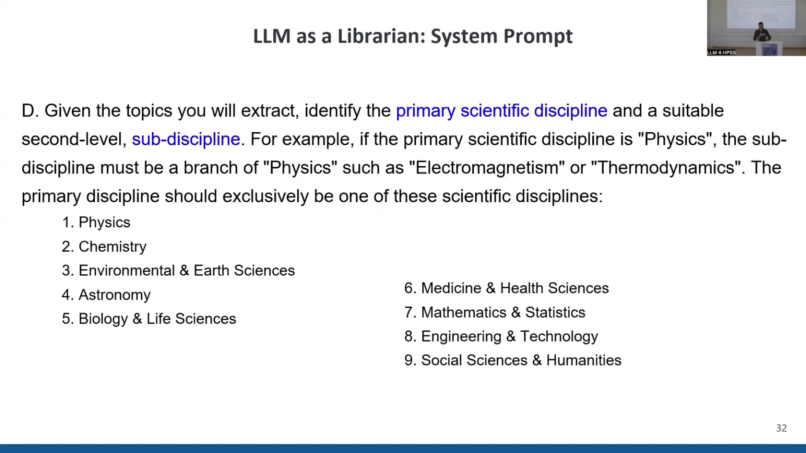

Leveraging Large Language Models for Metadata Enrichment and Diachronic Analysis of Chemical Knowledge in Historical Scientific Texts
Overview
Diego Alves and Sergey, with contributions from Badr Abdullah, have pioneered a comprehensive methodology to enrich the metadata of historical scientific texts and undertake diachronic analyses of chemical knowledge. This initiative addresses the inherent complexities of managing extensive historical corpora. The authors structured their project into two distinct phases: initially, they leverage Large Language Models (LLMs) to refine text metadata, focusing on article categorisation by scientific discipline, semantic tagging, and abstractive summarisation. Subsequently, their work delves into a meticulous case study, analysing the evolution of chemical discourse across various disciplines over time. This second phase specifically identifies periods of heightened interdisciplinarity and knowledge transfer, employing advanced computational methods. The Philosophical Transactions of the Royal Society of London, a foundational and continuously published scientific journal spanning over three centuries, serves as the primary data source, providing a rich historical context for this innovative research.
16.1 Research Objectives and Scope

Diego Alves, Sergey, and LLM expert Badr Abdullah meticulously investigate the application of Large Language Models (LLMs) for enriching historical scientific texts. Their project, aptly titled “Leveraging Large Language Models for Metadata Enrichment and Diachronic Analysis of Chemical Knowledge in Historical Scientific Texts,” is structured into two principal components.
Initially, the first part focuses on deploying LLMs to enhance the metadata associated with historical texts. This phase encompasses the precise categorisation of articles by scientific discipline, the assignment of pertinent semantic tags or topics, and the generation of concise, abstractive summaries.
Subsequently, the second part undertakes a detailed analysis of the chemical space as it evolved across various scientific disciplines over time. A crucial objective here involves identifying specific periods that correspond to peaks of interdisciplinarity and significant knowledge transfer, thereby illuminating the dynamic nature of scientific discourse.
16.2 Historical Scientific Corpus: Philosophical Transactions
The authors’ project investigates the evolution of scientific English, alongside phenomena such as knowledge transfer and the identification of influential papers and authors. Central to this inquiry is the Philosophical Transactions of the Royal Society of London, a corpus of singular historical import.
First published in 1665, this journal holds the distinction of being the oldest scientific periodical in continuous publication, maintaining its esteemed reputation to this day. It proved instrumental in shaping scientific communication, notably by establishing the practice of peer-reviewed paper publication as a primary means for disseminating scientific knowledge. The corpus contains numerous foundational contributions, including Isaac Newton’s “New Theory about Light and Colours” from the 17th century, Benjamin Franklin’s “The ‘Philadelphia Experiment’ (the Electrical Kite)” from the 18th century, and James Clerk Maxwell’s “On the Dynamical Theory of the Electromagnetic Field” from the 19th century. Beyond these renowned works, the collection also features more curious, speculative texts, such as discussions on lunar inhabitants, though the authors’ research focuses on linguistic and thematic analysis rather than factual validation.
Alves and Sergey utilise the latest version of this extensive collection, the RSC 6.0 full corpus. This dataset spans over 300 years of scientific communication, from 1665 to 1996, encompassing nearly 48,000 texts and approximately 300 million tokens. Whilst the corpus includes pre-encoded metadata, such as author, century, year, and volume, a previous study employed LDA topic modelling to infer research field categories. This earlier classification, however, often conflated distinct scientific disciplines, sub-disciplines, and even text types, such as “observations” and “reporting,” necessitating a more refined approach to metadata enrichment.
16.3 Large Language Models for Metadata Enrichment

To address the limitations of existing metadata, Alves, Sergey, and Abdullah endeavoured to harness Large Language Models (LLMs) for comprehensive metadata enrichment. These models offer myriad applications, including text clean-up, summarisation, information extraction, and the feeding of knowledge graphs, alongside their primary utility in categorisation and facilitating access and retrieval.
Specifically, the authors tasked the LLM with four distinct operations:
It performed hierarchical categorisation, assigning both a primary discipline and a suitable sub-discipline to each article.
It identified key index terms, functioning as semantic tags or topics.
The model generated concise TL;DR summaries, typically 3-4 sentences in length, designed to capture the essence and main findings of an article in simple language, accessible even to a high school student.
Finally, the LLM proposed alternative, more reflective titles for the texts.
The research team selected Hermes-2-Pro-Llama-3-8B, an 8-billion-parameter model from the Llama 3 family, for this task. This particular variant, readily available on Hugging Face, demonstrated superior performance compared to Mistral and Llama 2, having undergone instruction-tuning specifically for producing structured outputs in formats such as JSON and YAML.
A meticulously crafted system prompt guided the LLM’s operations. The prompt first defined the model’s role: “Act as a librarian and organize a collection of historical scientific articles from the Royal Society of London, published between 1665 and 1996.” It then articulated the objective: “read, analyze, and organize a large corpus… create a comprehensive and structured database that facilitates search, retrieval, and analysis…” The input was described as OCR-extracted text from original articles, accompanied by existing metadata including title, author(s), publication date, journal, and a short text snippet.
The prompt detailed the four specific tasks:
Read and analyse the provided article to understand its content and context, then suggest an alternative title that better reflects its content.
Write a short 3-4 sentence TL;DR summary that captures the article’s essence and main findings, ensuring conciseness, informativeness, and simple language.
Identify exactly five main topics, conceptualised as Wikipedia Keywords for categorising the text into scientific sub-fields.
Given the extracted topics, identify the primary scientific discipline from a predefined list (Physics, Chemistry, Environmental & Earth Sciences, Astronomy, Biology & Life Sciences, Medicine & Health Sciences, Mathematics & Statistics, Engineering & Technology, Social Sciences & Humanities) and a suitable second-level sub-discipline, with the crucial constraint that the sub-discipline could not be one of the primary disciplines.
An example input, Isaac Newton’s 1672 letter, illustrated the expected YAML output. The LLM successfully transformed the original lengthy title into “A New Theory of Light and Colours,” assigned topics such as “Optics” and “Refraction,” generated a concise TL;DR summary, and accurately classified the article under “Physics” with the sub-discipline “Optics & Light.” A final instruction reinforced the requirement for a valid YAML output, with no additional text.
16.4 LLM Performance and Diachronic Corpus Analysis

Alves, Sergey, and Abdullah conducted initial sanity checks on the LLM’s performance, which produced highly promising outcomes. A remarkable 99.81% of the generated outputs—specifically 17,486 out of 17,520—conformed to the specified YAML format, underscoring the model’s adeptness in structured data generation. Furthermore, 94% of the predicted scientific disciplines aligned precisely with the predefined set of nine categories.
Nevertheless, the LLM exhibited some minor “hallucinations” or errors. For instance, it occasionally rendered “Earth Sciences” instead of the full “Environmental & Earth Sciences.” The model also innovated novel categories, such as “Music,” and sometimes incorporated the numerical index of a discipline directly into its name, for example, “3. Chemistry.” Moreover, certain sub-disciplines, like “neurology” and “zoology,” were incorrectly classified as primary disciplines. Despite these minor deviations, the LLM accurately assigned the vast majority of papers to their correct categories.
Leveraging this enhanced metadata, the authors conducted a diachronic analysis of the Royal Society articles, examining their distribution across disciplines over time. Before the close of the 18th century, the distribution of articles across disciplines appeared relatively homogeneous. However, the late 18th century witnessed a distinct surge in chemical articles, a phenomenon directly correlating with the Chemical Revolution. Subsequently, from the 19th century into the 20th, Chemistry, alongside Biology and Physics, emerged as one of the Royal Society’s primary pillars of scientific inquiry.
Further analysis involved visualising the TL;DR summaries using t-SNE projections. This revealed significant overlaps between Chemistry, Physics, and Biology, with Chemistry often situated centrally within this interdisciplinary space. Conversely, Humanities, Astronomy, and Mathematics formed more isolated clusters within the projection. This visualisation technique holds considerable promise for future research, enabling the detailed observation of diachronic shifts and evolving overlaps between disciplines.
16.5 Diachronic Analysis of Chemical Space

Building upon the LLM-derived classifications, the authors proceeded with a diachronic analysis of the chemical space, focusing specifically on Chemistry, Biology, and Physics, given their prominence within the corpus.
To extract chemical terms, the research team employed ChemDataExtractor, a Python module designed for the automatic identification of chemical substances. Initial application of this tool to the entire text corpus yielded substantial noise. Consequently, the authors adopted a refined approach: ChemDataExtractor was subsequently applied to a pre-filtered list of extracted substances, a method that significantly reduced the noisy output and improved precision.
For analysing the chemical space, Alves and Sergey utilised Kullback-Leibler Divergence (KLD). This statistical measure quantifies the number of additional bits required to encode a dataset A when an (often sub-optimal) model based on dataset B is employed. Crucially, higher KLD values indicate greater differences between datasets, whilst lower values suggest relative similarity.
The authors applied KLD in two distinct ways. First, to trace the independent evolution of the chemical space within each discipline along the historical timeline, they compared 20-year periods before a specific date with 20-year periods after it, employing a sliding 5-year window. This technique allowed for a granular understanding of how chemical terminology and concepts shifted within Chemistry, Biology, and Physics individually. Second, for a broader interdisciplinary perspective, the team conducted a pairwise comparison of Chemistry with Physics and Chemistry with Biology, based on 50-year periods.
16.6 Kullback-Leibler Divergence Results and Interdisciplinary Dynamics

The authors’ analysis of the Kullback-Leibler Divergence (KLD) per discipline uncovered consistent trajectories across Chemistry, Biology, and Physics, with peaks and troughs in KLD values occurring roughly concurrently. Towards the end of the timeline, the KLD generally decreased, indicating less variation between future and past periods within each discipline. A pronounced peak manifested in the late 18th century, prompting further investigation into the specific chemical substances driving this change.
Examining the period from 1776 to 1816, corresponding to the late 18th-century peak, Alves and Sergey observed that in both Biology and Physics, one or two elements exhibited exceptionally high KLD values, effectively driving the observed shifts. Intriguingly, the same core chemical elements appeared across Chemistry, Biology, and Physics during this era.
However, a significant divergence became apparent when analysing the second half of the 19th century (1856-1906). During this period, the KLD graphs for Biology and Physics became considerably more populated, with individual elemental contributions showing greater uniformity. Biology’s chemical discourse evolved distinctly towards biochemistry, incorporating substances related to biochemical processes. Conversely, Chemistry and Physics increasingly focused on noble gases and radioactive elements, reflecting their discovery and burgeoning importance in the late 19th century.
Interdisciplinary comparisons, visualised through word clouds for the latter half of the 20th century, further elucidated these thematic differences. In the comparison between Chemistry and Biology, the biological word cloud featured a greater prevalence of substances associated with biochemical processes in living organisms. In contrast, the chemical word cloud highlighted substances pertinent to organic chemistry, such as hydrocarbons and benzene. When comparing Chemistry with Physics, the latter’s word cloud prominently displayed metals, noble gases, rare earth metals, semi-metals, and radioactive metals, underscoring distinct disciplinary thematic focuses.
Crucially, this pairwise KLD analysis facilitated the detection of “knowledge transfer” events. Knowledge transfer, in this context, describes instances where an element initially distinctive of one discipline in an earlier period subsequently became more characteristic of another. For example, tin, which was distinctive of Chemistry in the early 18th century, clearly shifted to become distinctive of Physics by the late 18th century. Similar shifts were observed for other elements in the early 20th century. Furthermore, elements transitioning from Chemistry to Biology in the 20th century consistently related to biochemical processes, reinforcing the observed disciplinary specialisation.
16.7 Conclusion and Future Research Directions

Alves, Sergey, and Abdullah effectively utilised a Large Language Model for the categorisation of articles and the development of refined topic models within the historical corpus. Building upon these LLM-generated results, the authors conducted a comprehensive diachronic analysis of the chemical space across three key disciplines: Chemistry, Biology, and Physics. Furthermore, they performed a detailed interdisciplinary comparison of this evolving chemical landscape.
Despite these significant achievements, considerable scope persists for future work. For the first part of the project, the authors plan to test alternative LLMs and undertake a rigorous evaluation of the current model’s outputs to ensure robustness and accuracy. Regarding the diachronic analysis of the chemical space, future efforts will involve a more fine-grained interdisciplinary analysis, potentially incorporating diachronic sliding windows of varying lengths. Expanding the scope to include additional disciplines, such as a comparison between Chemistry and Medicine, also presents a compelling avenue. Finally, exploring the evolution of chemical space using surprisal, a measure of unexpectedness, could yield further insights into the dynamics of scientific discovery and knowledge transfer.